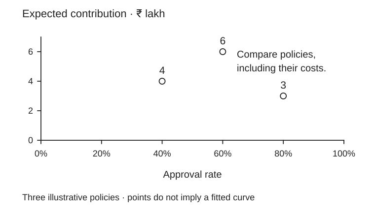

Your model’s AUC is not the business case.
A better classifier may approve fewer profitable customers or fail under a new economic regime. Show calibrated probabilities, costs of errors and a policy threshold. The meeting question is “Which policy creates value at acceptable risk?” Your next action: draw expected profit versus approval rate.
